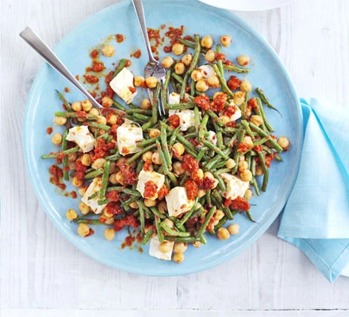

Feta Salad

Image of the Feta Salad
This satisfying veggie supper is full of summer flavours, and it's on the table in 15 minutes
Ingredients
- 400g green beans, trimmed and halved
- 3 tbsp olive oil
- 2 x 400g can chickpeas, rinsed and drained
- 1 garlic clove, roughly chopped
- 2 whole roasted red peppers from a jar
- 1 tbsp sherry vinegar
- 200g pack feta cheese, broken into chunks
Steps for cooking
- Heat oven to 200C/180C fan/gas 6. Spread the beans onto a baking tray, season and drizzle over 1 tbsp oil. Roast for 10 mins until lightly charred. Tip into a bowl with the chickpeas.
- In a food processor, make a dressing by whizzing together the garlic, sundried tomatoes, peppers, vinegar and the remaining oil. Season, stir into the beans with the feta and serve.